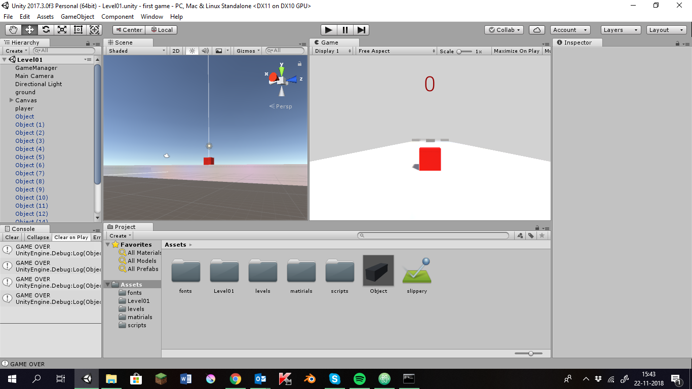

Projecten
In de coderclass heb je soms projecten dan moeet je in groepen iets maken, zoals een website. Hier zie je alle projecten die ik heb gemaakt.
Ik ben Karsten Veltman. Ik ben 13 jaar oud en ik zit op het Metis Montessori lyceum. Ik zit in de Coderclass en dat vind ik heel leuk, dit hier is mijn portfolio. Mijn hobbies zijn gamen, lezen en natuurlijk programeren.
Dit hier zijn mijn badges die krijg je als je iets hebt gedaan, persoonlijk vond ik de javascript badge het leukst.
In de coderclass heb je soms projecten dan moeet je in groepen iets maken, zoals een website. Hier zie je alle projecten die ik heb gemaakt.
in de 1e klas hadden we een blender project dat vond ik heel erg gaaf hier is het filmpje dat we hebben gemaakt
we hebben ook een project met hue lampen gemaakt helaas heb ik de bestanden niet dus kan ik dat niet laten zien
Ik heb zelf thuis iets gemaakt met unity het is nog niet klaar maar hier is een screenshot. 
| voornaam: | Karsten |
| achternaam: | Veltman |
| leeftijd: | 13 |
| school: | Metis Montessori lyceum |
| leeftijd | 13 |
| email: | karsten.veltman@coderclass.nl |